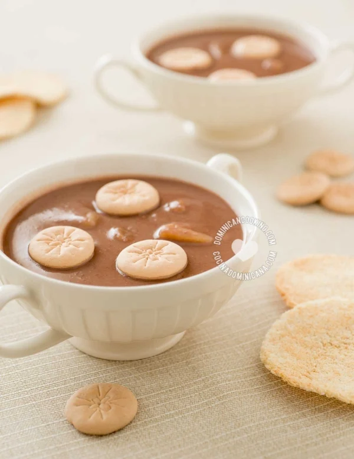

Siempre nos ha sorprendido que de todas nuestras recetas,
Habichuelas con Dulce sea la más popular. Esta es una extraña combinación de ingredientes para un postre, ¡pero
a los dominicanos nos encanta!

Ingredientes
4 tazas de habichuelas rojas hervidas y bien blandas
6 tazas de agua en la que hirvieron las habichuelas
2 tazas de leche de coco
3 tazas de leche evaporada
2 palitos de canela
½ cucharada de sal
1 taza de azúcar
1 cucharadita de extracto de vainilla
½ lb [0.24 kg] de batatas
10 clavos dulces
½ taza de pasas
2 cucharaditas de mantequilla salada
8 tortitas pequeñas de casabe
1 taza de galletas de leche
Intrucciones
Pon el agua y las habichuelas en la licuadora. Cuela y
descarta los sólidos. Vierte las habichuelas, la leche de coco y la leche evaporada en una olla, agrega
sal, azúcar, vainilla, canela, clavos y la batata y cuece a fuego medio-bajo. Cuece hasta que la batata
esté blanda. Agrega las pasas y cuece otros 10 minutos. Revuelve regularmente para evitar que se adhiera
al fondo y se queme.
Deja enfriar a temperatura ambiente y luego enfría en la
nevera por al menos una hora antes de servir.
Unta la mantequilla en el casabe y cuece en el horno hasta
que doren
Sirve con el casabe a un lado. Pon las galletas en las
habichuelas
“Esta receta fue copiada de la página
www.cocinadominicana.com”